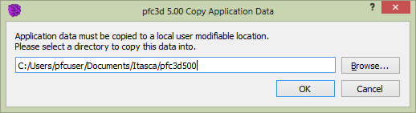

复制应用程序数据

首次启动PFC时会出现此对话框。它用于将随程序提供的众多示例文件与项目复制到用户选定的文件夹。这样做有两条非常充分的理由。
- PFC安装在计算机的“Program Files”区域，而在大多数 Windows 系统中该区域是受保护的。如果从该处运行文件/项目，用户很可能遇到由 Windows 安全机制引起的错误或问题。
- 创建由用户控制的这些文件存储库，可使用户按所需程度对这些文件进行试验和修改，而不会有丢失文件原始内容的风险。
该对话框会提供一个初始建议的文件夹位置；不过，用户可以在编辑字段中输入其他位置，或使用按钮来选择其他位置。用户也可以选择来直接跳过此操作；不过，在执行文件复制操作之前，每次启动程序时该对话框都会继续出现。
重复复制操作
选择菜单序列可多次执行“复制应用程序数据”操作。这样做会再次调用此对话框。用户可按需要选择覆盖这些文件的现有用户副本，或指定新位置。
程序更新
当用户更新PFC时，已安装的“应用程序数据”文件的内容也可能随之更新。建议用户在安装任何程序更新时查看修订历史（Revision History）。这是判断“应用程序数据”文件的变更是否也意味着需要重复“复制应用程序数据”过程的最佳方法。
| 这些内容对您有帮助吗？… 版权与免责声明 | FLAC3D © 2019, Itasca | 原文更新于 2020 年 10 月 8 日 |